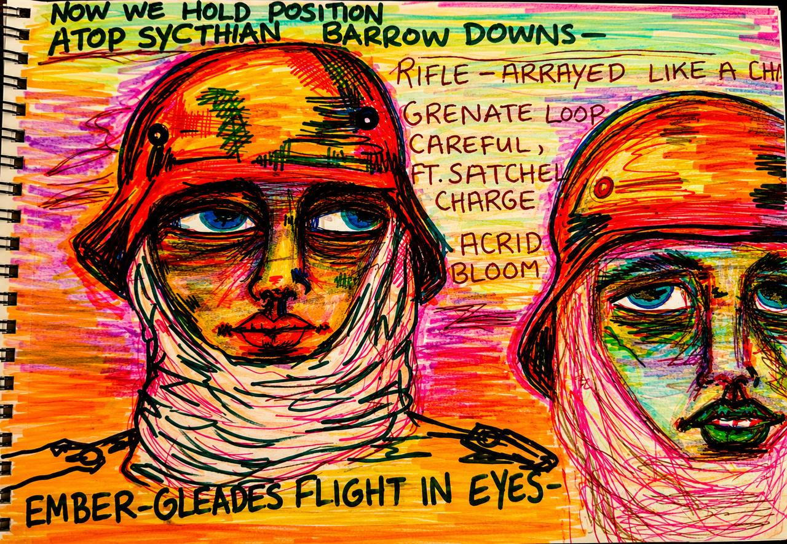

Archival Sources
Operational histories, field reports, wartime correspondence, intelligence imagery, and visual archives form the documentary ground.
archival witness project
THE FRONT DID NOT END
project statement
The Eastern Front is not approached here as a closed historical event. It persists as atmosphere, material, infrastructure, and psychic weather.
You Are Still Inside It is a contemporary archival art project built from fragments: wartime images, field reports, ruined cities, private correspondence, and figures suspended between document and apparition.
The work does not illustrate war. It studies the afterlife of historical force, and the ways a century can continue to occupy the present without announcing itself.

human dimension
The figures are not symbols. They are presences held at the edge of recognition, pulled forward through color, damage, and interruption.
Each face becomes a site of pressure: the archive looking back, altered by the hand, refusing to remain inert.
research / method
Operational histories, field reports, wartime correspondence, intelligence imagery, and visual archives form the documentary ground.
Collage, overpainting, abrasion, and chromatic distortion convert source material into living historical surface.
The project remains anchored in the Eastern Front and Battle of Stalingrad while resisting spectacle, fandom, or militaria display.
research apparatus
Memoirs, operational histories, battlefield archaeology, wartime correspondence, Soviet and German primary accounts, visual archives, and postwar testimony related to the Eastern Front and the Battle of Stalingrad.
David M. Glantz
Antony Beevor
Jason D. Mark
Nik Cornish
Erhard Raus
Reinhold Busch
Heinrich Gerlach
Franz Sapp
Jens Ebert
Feldpost collections
Intelligence imagery archives
Wartime photography collections
German and Soviet battlefield ephemera
POW documentation
Medical and logistical reports
Barrikady Factory studies
Urban combat analyses
Panzer operational records
Eastern Front engineering reports
large red battlefield composition
expanded field
The project expands from isolated works into a larger apparatus of recurrence, accumulation, and return.
process
selected works


acquisitions / correspondence
Selected works, commissions, exhibitions, collaborations, and research inquiries:
feldpost@youarestillinsideit.com